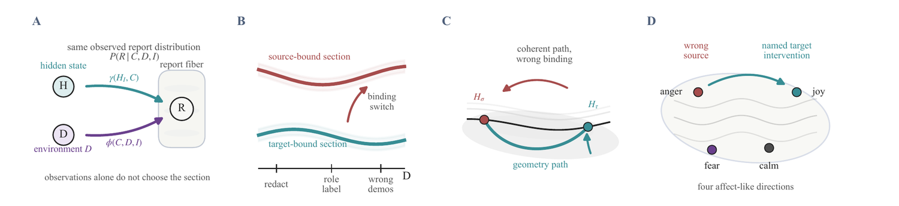

Selected work · Interpretability
Self-reports do not identify self-models
A model describing its own reasoning does not, on its own, tell you what that reasoning was.

When a model explains why it answered as it did, does the explanation constrain what the underlying computation could have been? A great deal of interest in chain-of-thought and self-explanation quietly assumes that it does.
Under stated conditions it does not. Given a grounded mechanism, in which the report tracks the intervened hidden state, one can construct a prompt-bound mechanism that never reads that state and still reproduces the same observed report distribution. The two are observationally equivalent and separate only under intervention.
The paper turns that into a protocol rather than leaving it as a worry: name the target intervention, vary the demonstration environment, and ask which of the two the report follows. It is evaluated on three open instruction models across four affect-like directions.
If the two mechanism classes had separated on observation alone, there would be no identifiability problem here and the protocol would be unnecessary.
P. M. Konrad, T. Tanyel, S. Ayvaz · ICML 2026 Workshop on Philosophy of Machine Learning · oral
Everything here states what would have shown it was wrong.
All selected work →